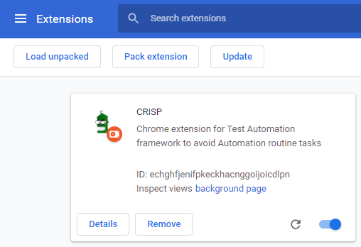
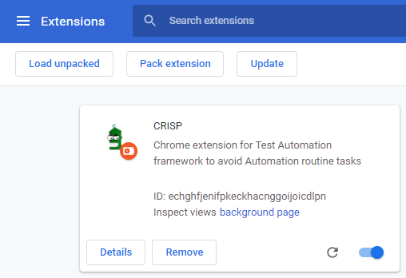

CRISP overview
CRISP is an open-source Chrome extension which helps to select web elements on the page, automatically populate its selectors, assign configured actions and generate ready test code based on the customized patterns. It can speed up the process of test development by replacing manual time-consuming operations with automated features.

-
Follow the quick start guide to setup the WebdriverIO Cucumber Boilerplate project
-
Install and use CRISP to generate test steps
-
Add generated test steps to new scenario in WebdriverIO Cucumber Boilerplate project
-
Run the test
Requirements
Node version 12 or higher
Installation
-
Download the latest stable release here or clone the git repo:
$ git clone https://github.com/exadel-inc/crisp.git -
Navigate to the root folder and run the command to install the dependencies:
$ npm install -
Run the command to build the artifacts:
$ npm run build -
Launch Chrome browser and open the Extension Management page by navigating to
chrome://extensions -
Enable Developer Mode by clicking the toggle switch next to Developer mode
-
Click the Load unpacked button and select the
distdirectory from CRISP files. 
